# 空间插值
# 引子
# 什么是空间插值
Procedure for predicting/estimating the value of attribute at an unvisited location from measurements made at locations nearby (sample points)
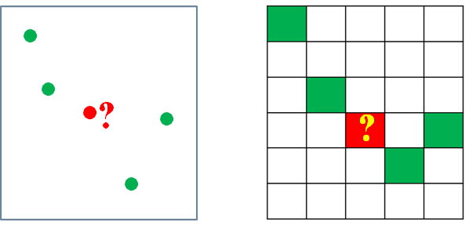根据已知位置的采样点的数据来预测/估计其他位置的未知点的过程。
概率角度来看，利用有限采样点，来恢复整个随机状态（随机场）的过程。
# 为什么要空间插值
- 现有离散曲面的分辨率、像元大小、方向与要求不符
- 现有连续曲面的数据模型与要求不一致
- 现有数据不能完全覆盖所要求的区域*
# 空间插值原理
空间插值的理论假设是：空间位置上越靠近的点，越可能具有相似的特征值，而距离越远的点，其特征值相似的可能性越小。
# 地理学第一定理
Everything is related to everything else but close things are more related than distant things
概括性地陈述了地理现象在空间上的相关性（相近的事物更相关），即空间自相关性。
# 地理学第二定律
geographic variables exhibit uncontrolled variance
地理现象的空间变化以及变化的差异性，即不可控的空间变化规律或者空间异质性。
# 地理学第三定律
The more similar geographic configurations of two points (areas), the more similar the values (processes) of the target variable at these two points (areas)
地理环境越相似，地理特征越相近
# 基本概念
- 插值：已知点全部通过构造的函数 求符合函数的其它点
- 逼近：已知点整体上接近构造的函数 求符合函数的其它点
- 拟合：插值逼近的统称
- 光滑：一阶导数连续
# 常用空间插值方法
插值方法通常分为确定性方法和地统计方法
确定性方法：根据周围测量值确定生成平滑表面的数学公式，将未知值位置代入到该公式中求解。不提供插值预测的误差评价。
确定性插值方法包括：反距离权重法(IDW)，自然领域法，趋势面法和样条函数法
地统计方法：以包含自相关（测量点之间的统计关系）的统计模型为基础。地统计方法不仅具有产生预测表面的功能，而且能够对预测的确定性或准确性提供某种度量。
地统计方法插值包括：克里金插值
插值方法可按所用数据类型划分为离散空间和连续空间
- 离散空间：空间具有跳跃特征（土地利用类型），重要变化发生在边界上，边界内的变化则是均匀的，同质的，即在各个方面都是相同的。 邻近元法：以最相邻近图元的特征值表征未知图元的特征值。
- 连续空间：空间具有渐变特征（地形表面），内插技术必须采用连续的空间渐变模型实现这些连续变化，可用一种平滑的数学表面加以描述。这类技术可分为整体拟合和局部拟合技术两大类。
- 整体拟合技术：拟合模型是由研究区域内所有采样点上的全部特征观测值建立的。通常采用的技术是整体趋势面拟合。这种内插技术一般用于模拟大范围内的变化，而不能提供内插区域的局部特性
- 局部拟合技术：则是仅仅用邻近的数据点来估计未知点的值，而不受局部范围外其它点的影响。这类技术包括**双线性多项式内插、样条函数、移动拟合法等等。
# 距离倒数权重法
以距离的倒数为权重，距离越小、影响越大。
z(x,y) = \frac{\sum_i{w_iz_i}}{\sum_iw_i} \\ w_i= \frac{1}{d_i^r},r=1,2,3,... \text{r为距离指数}案例：
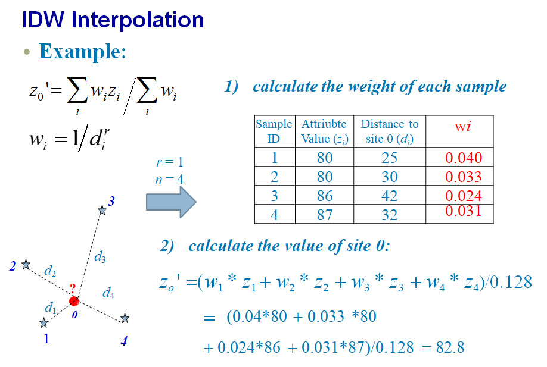 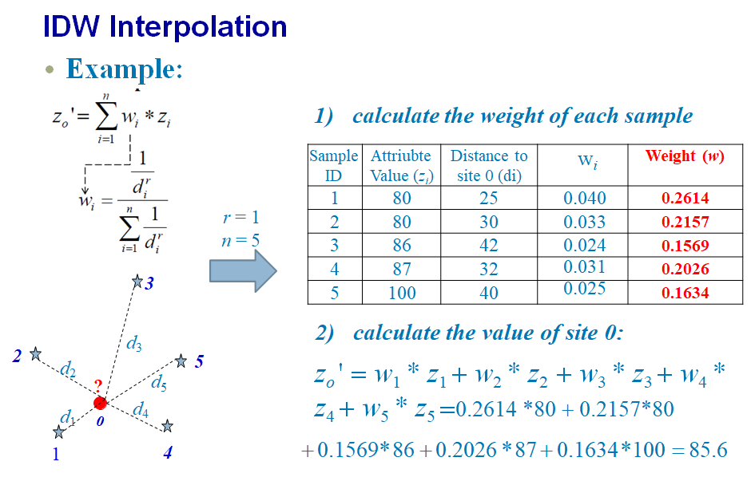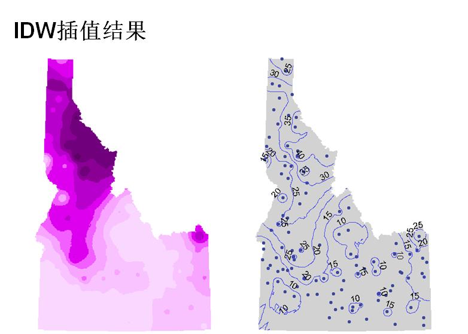番外：在了解过克里金插值之后，即可明白反距离权重插值是满足无偏估计的一个插值，即权重的
# 趋势面法
由于事物的起伏规律大致知道，适用于社会经济指标的空间连续特征。
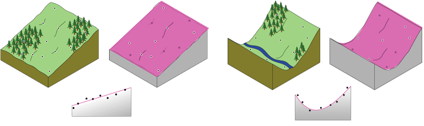常用的有线性和对数两种趋势面。两者的区别在于采用多项式回归（最小二乘法）。
例如线性三次趋势面模型：
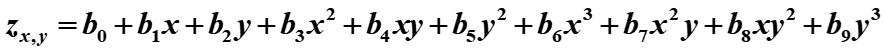常用趋势面插值：
- 线性插值
- 双线性多项式插值
- 双三次多项式插值
即用已知点，将形式已知的函数形式未知数解出来，然后对空间进行表征描述。
改进：局部插值
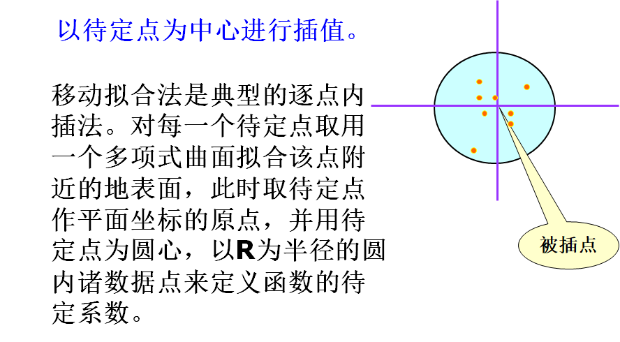# 泰森多边形
泰森多边形是荷兰气候学家A.H.Thiessen提出的一种计算区域降雨量的方法。在某个区域内雨量观测站总是以孤立点散布的，在地图上作所有相邻观测点连线的垂直平分线，由这些平分线构成的包围每个观测点的多边形就是所谓的泰森多边形。
特点：在泰森多边形的边界上任取一点，到相邻两个观测点的距离是相同的，而多边形内的任意点到该多边形内的观测点距离最近。
泰森多边形（Thiessen or proximal polygon），也称为Voronoi多边形，它假设多边形内的任意点与多边形内的已知点的距离最近。
本身不是插值的方法，而是作为用点表示面的方法
# 核密度估算法
引子
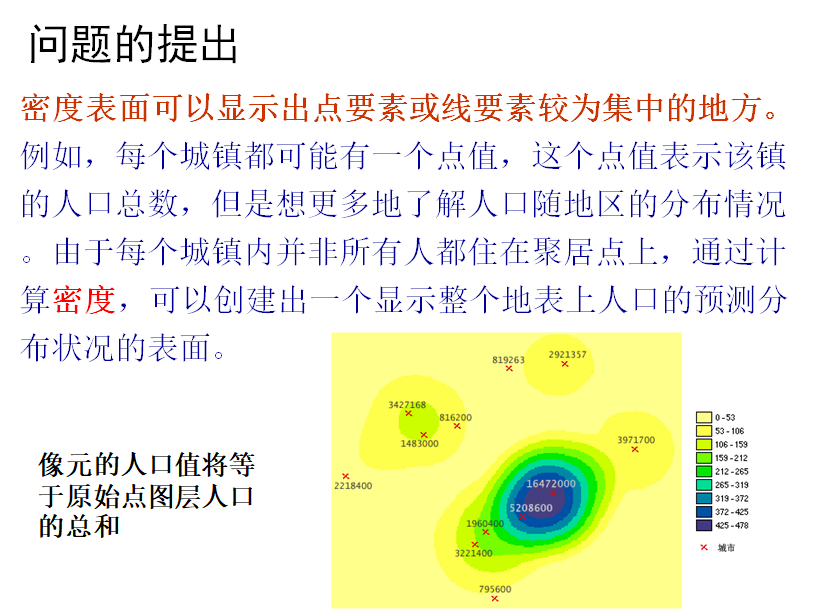密度估计
密度估算用已知点的样本来计算栅格中像元的密度值。
密度估算分：简单密度估算和核密度估算两种方法。
简单密度估算是将栅格置于点分布图上，将落在每个像元的点值求和，在除以像元单元面积的大小，获得每个像元的密度。
计算任意一点处点实体密度的方法是以该点为圆心生成一个圆，圆的半径根据计算密度的尺度决定， 再加权统计落入该圆中的点实体个数， 然后除以圆的面积， 即得到点密度的值。
（Pazern窗非参数估计思路）
核密度估算是将每个已知点与核函数相联系，用于估算目的。
**核密度估计是在概率论中用来估计未知的密度函数。**如果某一个数在观察中出现了，我们可以认为这个数的概率密度很大，和这个数比较近的数的概率密度也会比较大，而那些离这个数远的数的概率密度会比较小。
基于这种想法，针对观察中的每一个数，我们都可以去拟合我们想象中的那个远小近大概率密度。针对每一个观察中出现的数拟合出多个概率密度分布函数之后，取平均。如果某些数是比较重要，某些数反之，则可以取加权平均。
参考传送门
案例：
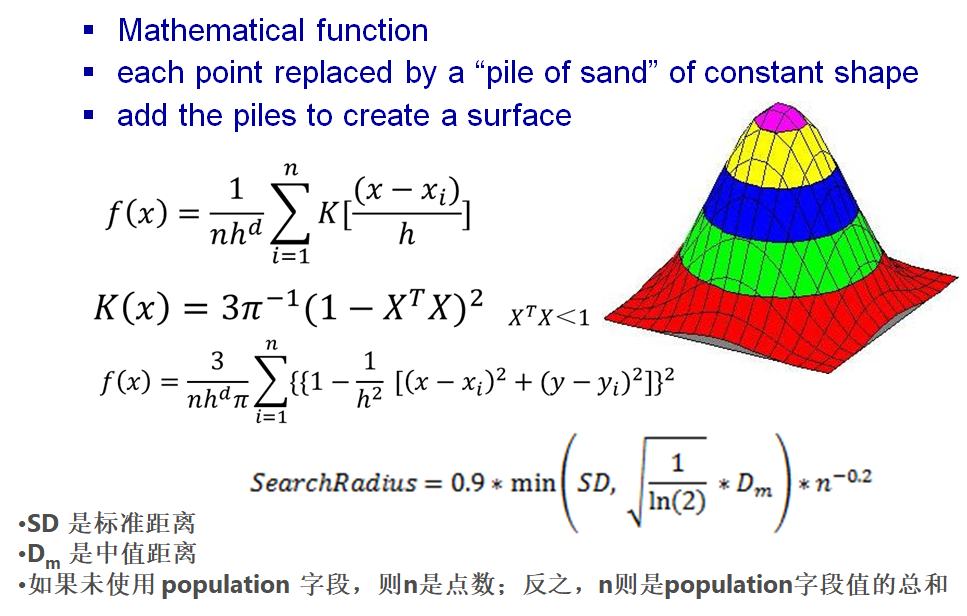 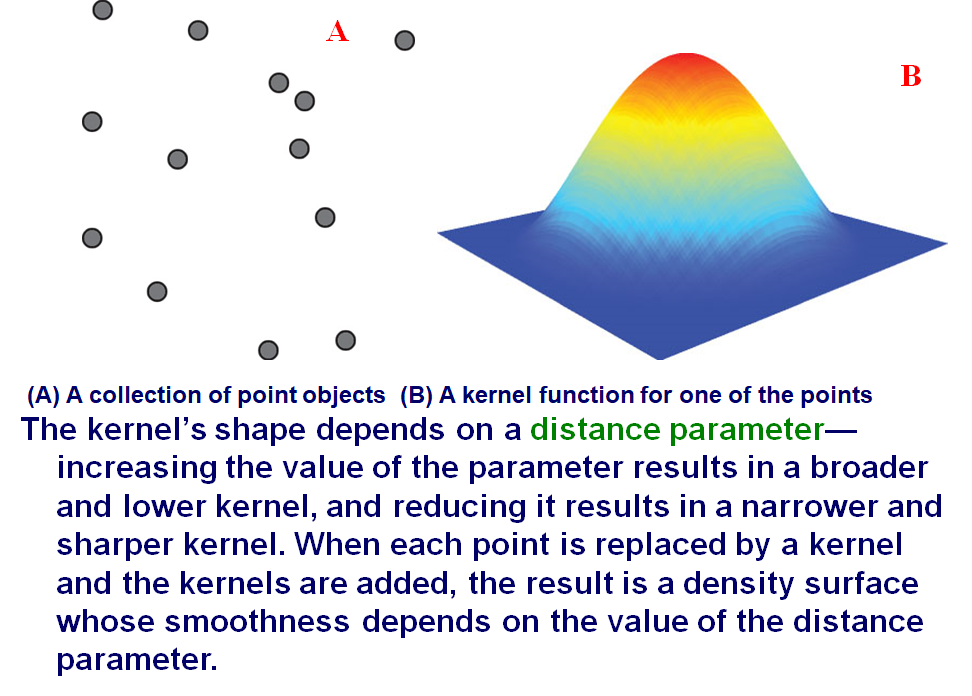
问题：超参数半径的选择？太大或者太小都会导致一些问题
# 样条函数法
思路：利用样本点，采用一定的数学函数拟合出一个光滑曲面，使该曲面曲率最小，且通过所有的样本点。
相当于扭曲一条橡皮让它通过所有的点，同时曲率最小。
适用于地下水位，高程，大气污染等。
两种样条插值方法：规则样条和张力样条
规则样条函数方法使用可能位于样本数据范围之外的值来创建渐变的平滑表面。
张力样条函数方法根据建模现象的特性来控制表面的硬度。它使用受样本数据范围约束更为严格的值来创建不太平滑的表面。
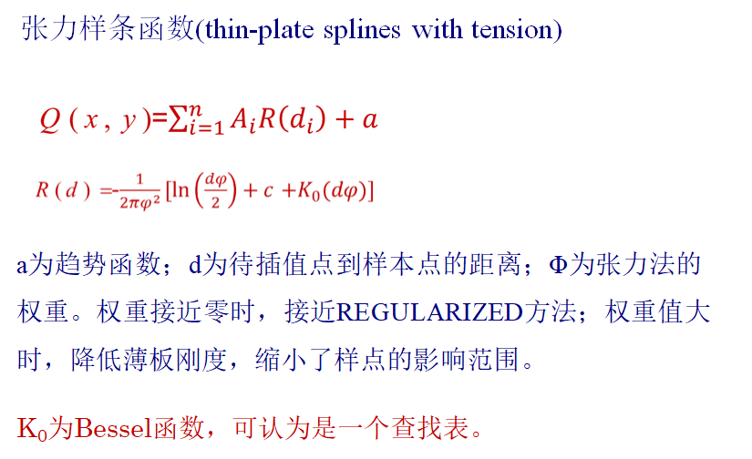
# 克里金插值
基本思路：首先考虑空间属性在空间位置上的变异分布，确定对一个待插点值有影响的距离范围，然后用此范围内的采样点来估计待插点属性值，是一种求最优线性无偏内插估计量的方法（线性、无偏、最小估计方差）
# 变差函数的概念与参数
变差函数(或叫变程方差函数，或变异函数)是地质统计学所特有的基本工具。它既能描述区域化变量的空间结构性变化，又能描述其随机性变化。
如何理解结构性：
首先区域化变量是一个随机函数，具有局部的、随机的、异常的性质
其次，区域化变量具有一般的或者平均的结构性，即变量在点x和x+h处的数值Z(x)和Z(x+h)具有某种程度的自相关，这种自相关依赖于两点间的距离及变量特征，这就是其结构性。
# 变差函数的定义
假设空间点只在一维的轴上变化，则将区域化变量在x，x+h两点处的值之差的方差之半定义为在轴方向上的变差函数，记为
方差等于平方的期望减去期望的平方
由二阶平稳性假设
即数学期望存在且平稳
方差存在且平稳
或者协方差存在且平稳
可得到
计算案例：
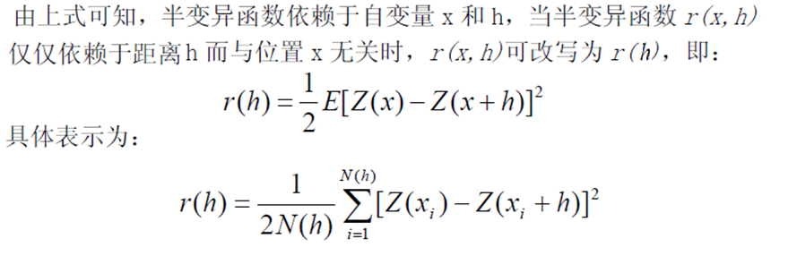 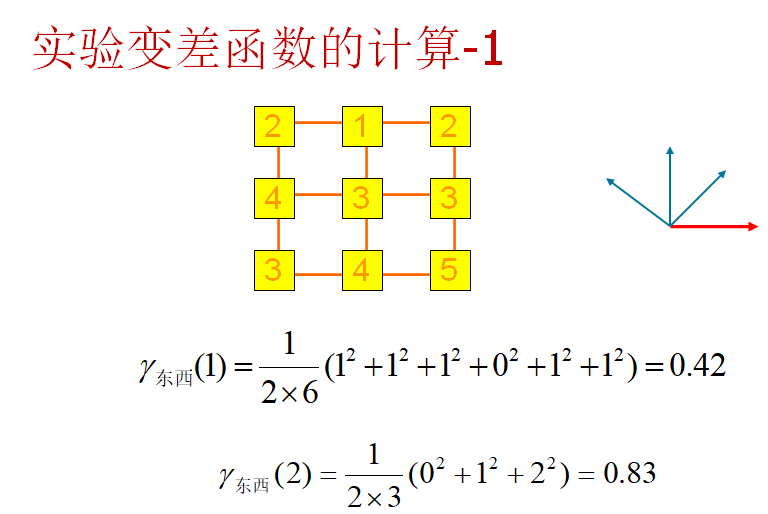 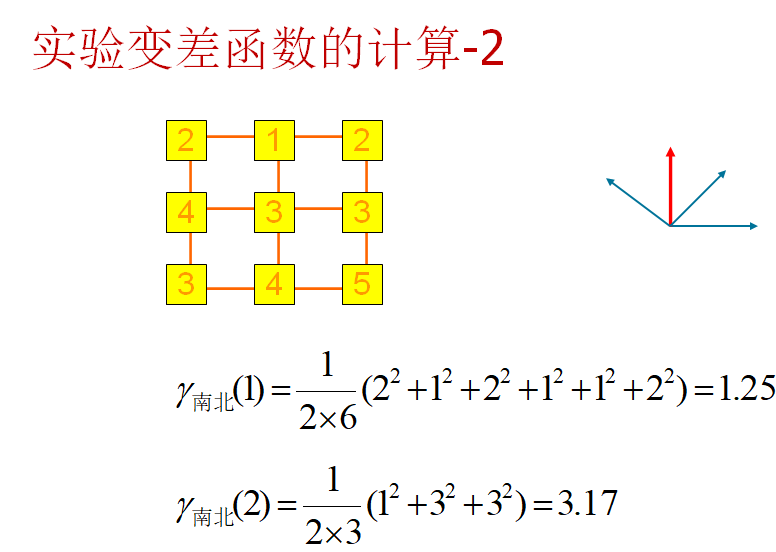 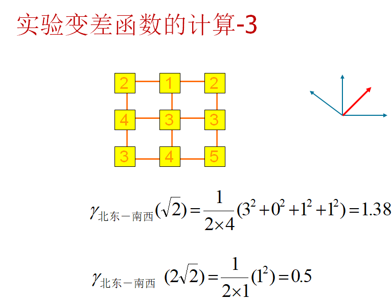 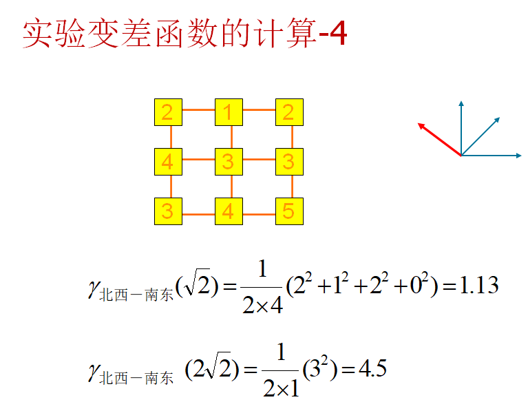变差函数参数：
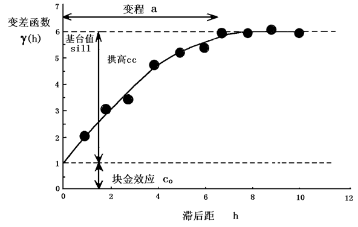变程：指区域化变量在空间上具有相关性的范围。在变程范围之内，数据具有相关性；而在变程之外，数据之间互不相关，即在变程以外的观测值不对估计结果产生影响
块金值：变差函数如果在原点间断，在地质统计学中称为“块金效应”，表现为在很短的距离内有较大的空间变异性，无论h多小，两个随机变量都不相关 。它可以由测量误差引起，也可以来自矿化现象的微观变异性。在数学上，块金值c0相当于变量纯随机性的部分。
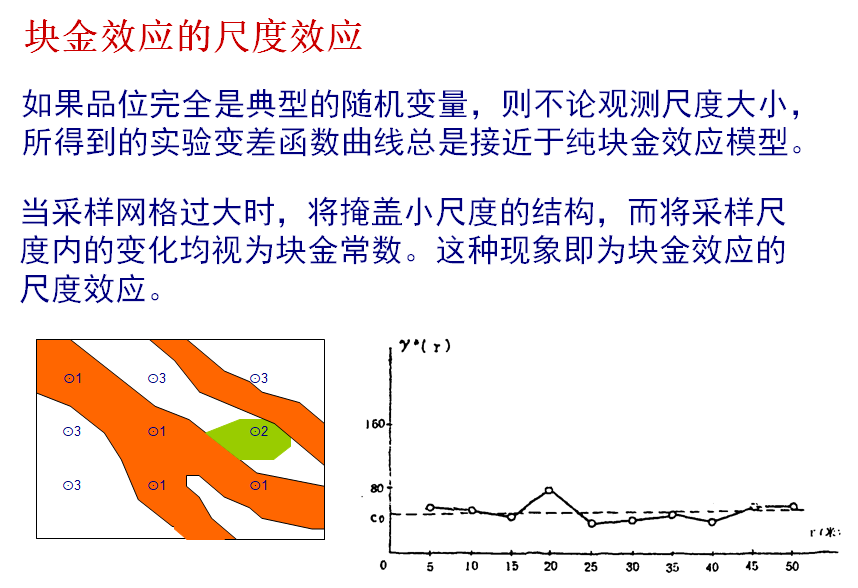
拱高：拱高为在取得有效数据的尺度上，可观测得到的变异性幅度大小。
基台值(Sill)：代表变量在空间上的总变异性大小。即为变差函数在h大于变程时的值，为块金值和拱高之和。当块金值等于0时，基台值即为拱高。
变差函数与协方差函数关系：
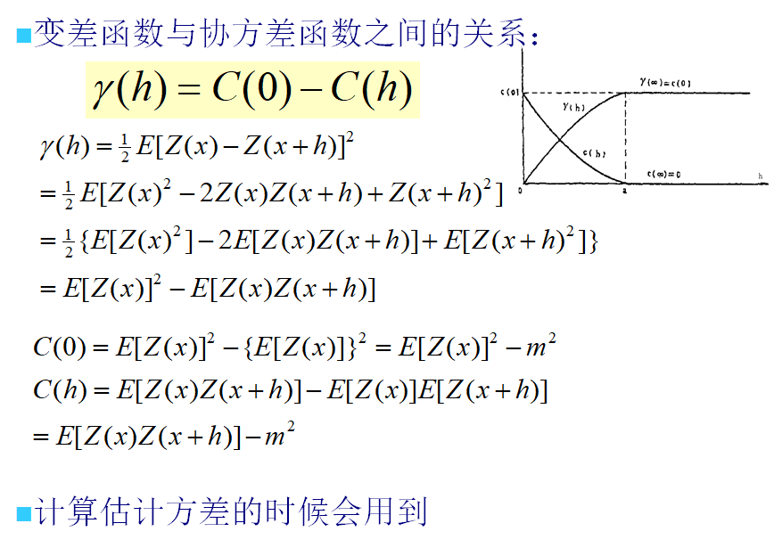# 变差函数的拟合
常见对变差函数拟合的模型主要有以下几类：
球状模型
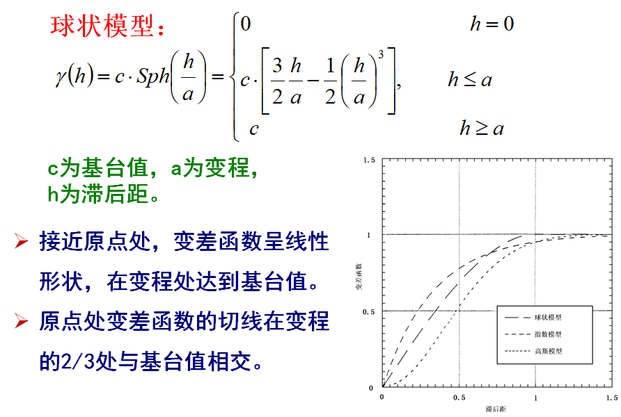指数模型
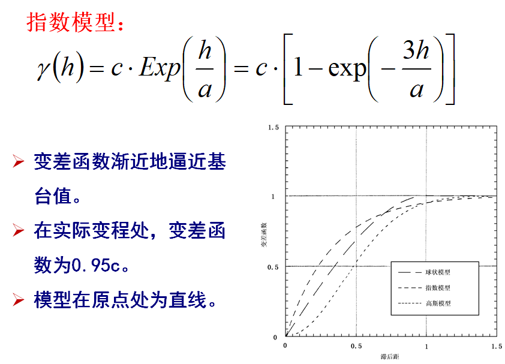高斯模型
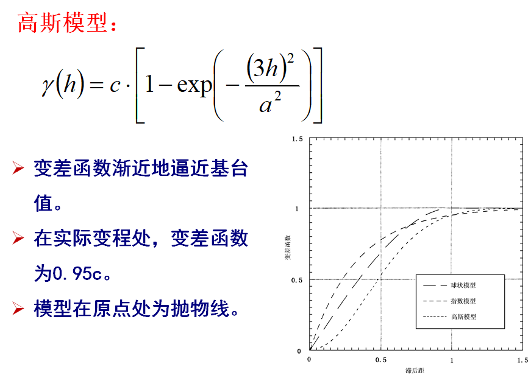幂函数模型
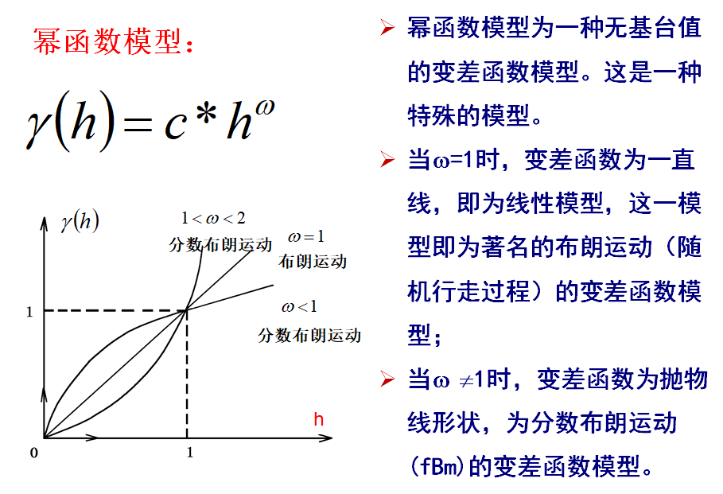
# 克里金法
克里格法建立在变异函数理论及结构分析基础之上的，它是在有限区域内对区域化变量的取值进行无偏最优估计的一种方法。不仅考虑待估点位置与已知数据位置的相互关系，而且还考虑变量的空间相关性。
# 假设前提
- 空间自相关性
- 平稳性假设
应用条件：数据在空间上是连续的，服从正态分布，并且具有自相关性
# 基本思路
已知条件：
对区域内的一系列观测点，其观测值为。其协方差函数及变异函数存在。
求解模型：
对于区域内任意一点处的值，可以采用一个线性组合来估计
其中为权重系数，表示各空间样本点处的观测值对估计值的贡献程度。
求解任务：计算权重系数
求解过程：主要根据约束条件无偏性和最优化求解的最优估计组合，来解出满足约束条件下，最优的
以普通克里格插值推导为例
普通克里金认为区域化变量的数学期望是一个未知的常数，即
无偏性
无偏条件下，要求，则有
从而得到约束条件为
最优估计
推导过程省略...
估计方差表达式如下：
第一部分为待估计点自身位置的协方差
第二部分为采样点之间的协方差贡献
第三部分为待估计点与采样点之间的协方差贡献
在无偏条件下，即，使得最小，求出，该问题实际是条件极值问题，可用拉格朗日乘法来解决。
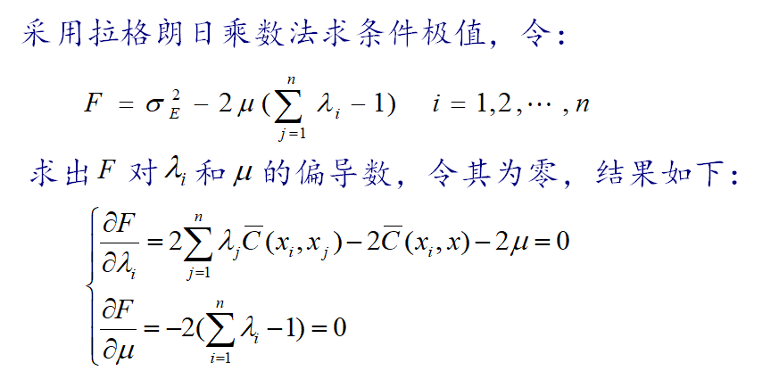
同时，得到最小估计方差，即克里金方差
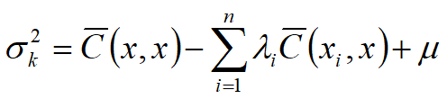使用变差函数表示如下：
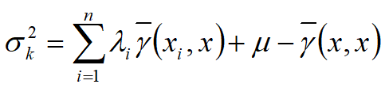上述的普通克里金方程组，以矩阵的形式，即为
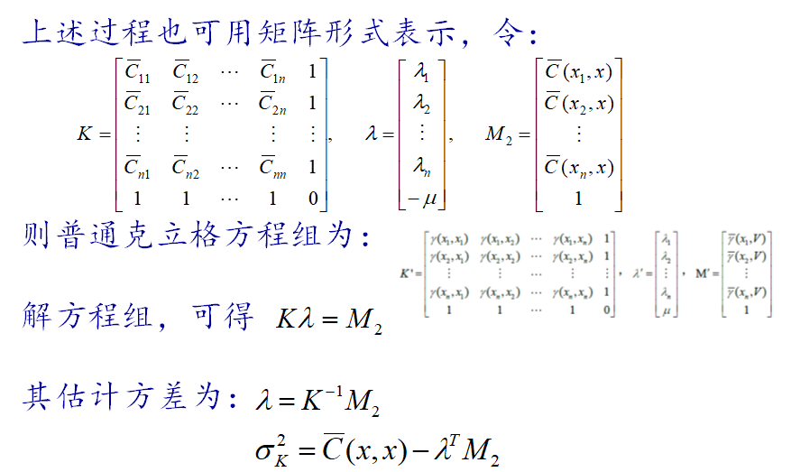# 案例
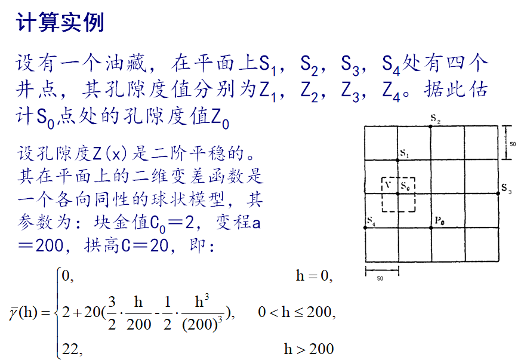 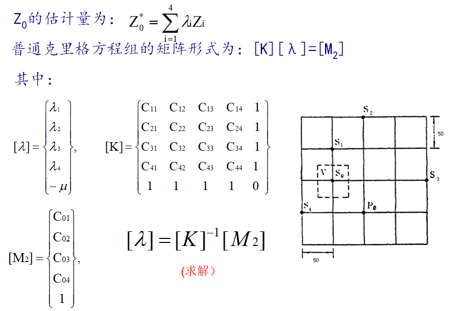那么现在问题就为如何求解
以为例，来说明求解过程。
首先，明确求解公式，根据协方差与变差函数关系可知

对于，其自身到自身的距离为0，所以有
为拱高
对于，其到的距离为，所以有
对于，其到的距离为，所以有
同理计算其他点，过程如下图
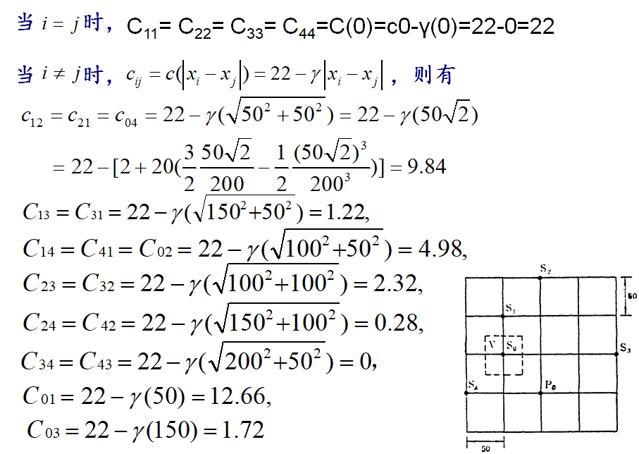 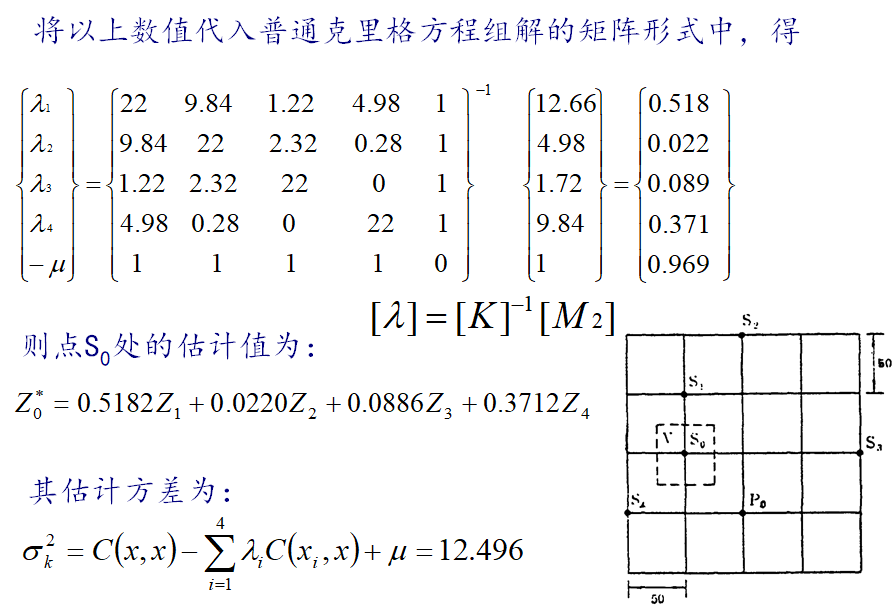# 关键问题
How many sample points should be included for each prediction?
需要多少个点来拟合变差函数？一般认为，至少100以上，最少不能少于20，否则结果可能不稳定
How to select these sample points?
关键看样本点是各向同性，还是各向异性
How to allocate the weight for each sample point?
# 空间插值评估
# 交叉验证
从样本集去掉一个样本进行插值，比较保留样本的预测值和实际值的差异，重复每个样本，获得RMS值。RMS值越小，插值结果越好。
# 一般验证
将样本点分为两组，一组用于建模插值，一组用于验证插值准确度。如果样本点太少，则难以适用该方法。